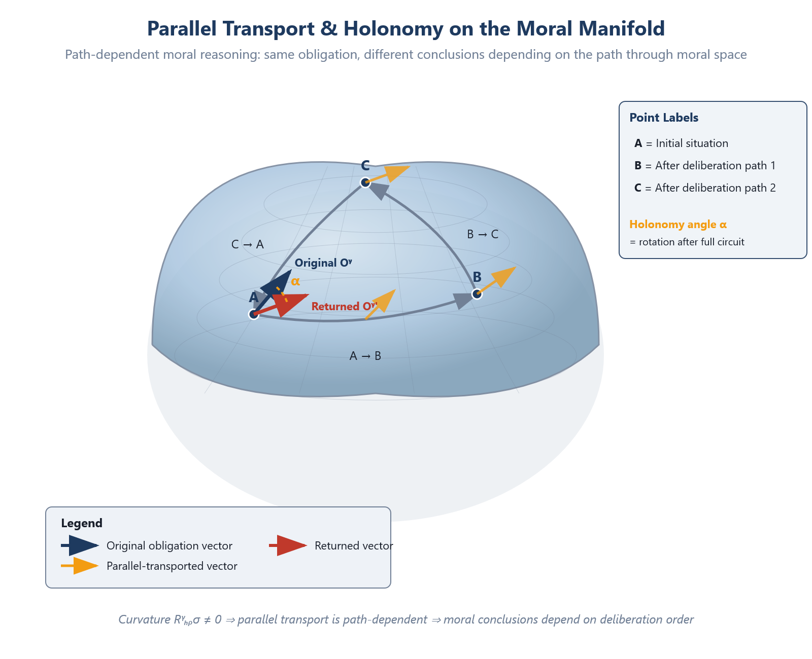

Chapter 10: Moral Dynamics — Parallel Transport, Holonomy, and the Curvature of Moral Space
RUNNING EXAMPLE — Priya’s Model
Priya presents her findings to two audiences in different orders and gets two different outcomes. Path A: she begins with Mrs. Voss’s story, then shows the statistical pattern. The team is moved; they want to act. Path B: she leads with statistics, then mentions individual cases. Executives focus on legal exposure and suggest a disclaimer. Same facts, same obligation—but the parallel transport of the argument through different conversational paths produces different moral conclusions. This is holonomy. The curvature of HealthBridge’s organizational moral space means the order of deliberation changes the outcome. She cannot simply present ‘the truth.’ She must choose a path, and the path matters.
10.1 Ethics in Motion
The preceding chapters developed a static picture: the moral manifold M (Chapter 5), the tensors that live on it (Chapter 6), the metric that measures them (Chapters 6, 9), and the stratified boundaries where the rules change (Chapter 8). This apparatus captures the geometry of a single moment — the structure of obligations, interests, and trade-offs at one point in moral space.
But ethics is not static. Situations change. Obligations evolve. Moral understanding develops. A promise made yesterday must be carried into today’s altered circumstances. A principle learned in one context must be applied in another. An obligation incurred in peacetime must be renegotiated in crisis. Ethics is not a photograph but a trajectory — a path through structured space.
This chapter introduces the dynamics of geometric ethics: how moral tensors change as we move through the moral manifold, how obligations are “transported” across changing circumstances, and what it means for moral evaluation to be path-dependent. The mathematical tools are the covariant derivative, parallel transport, holonomy, and curvature — developed abstractly in Chapter 4 (§4.6) and now given their moral content.
10.2 The Problem of Moral Change
Consider a simple scenario. Alice promises to meet Bob for coffee on Saturday. On Friday, Alice learns that Carol is having a medical emergency and needs help on Saturday morning. What happens to Alice’s obligation to Bob?
A static analysis takes two snapshots:
At t0: Alice has obligation O(t0) = “meet Bob for coffee.”
At t1: Alice has obligation O(t1) = “help Carol with the emergency.”
These are just two points in moral space, with two obligation vectors. The static analysis can compare them — O(t1) points in a different direction from O(t0) — but it cannot answer the dynamic questions:
How did O(t0) become O(t1)? Was the obligation to Bob destroyed, overridden, suspended, or transformed?
Is there continuity? Is O(t1) the “same” obligation as O(t0), reoriented by circumstances? Or is it a new obligation that replaced the old one?
Is there residue? Does the displaced obligation to Bob leave a trace — a secondary obligation to apologize, to reschedule, to acknowledge the broken commitment?
Is the result path-dependent? Would Alice’s final obligation be different if she had learned about Carol’s emergency before making the promise to Bob?
These are questions about moral dynamics — how moral tensors evolve along paths through M. To answer them, we need the apparatus of connections, parallel transport, and curvature.
10.3 The Moral Connection
Comparing Obligations Across Contexts
On a flat space, comparing vectors at different points is trivial: translate one to the other’s location and compare. On a curved space, there is no canonical translation — the comparison depends on the path taken between the two points. A connection is the additional structure that specifies how to make such comparisons.
Definition 10.1 (Moral Connection). A moral connection is an affine connection ∇ on the moral manifold M (within each stratum) that specifies, for any direction of change X and any obligation field O, the rate of change of O in the direction X:
Remark. The definition of the moral connection is restricted to individual strata. Across stratum boundaries, the connection may be discontinuous. The junction conditions governing cross-boundary behavior — including continuity of parallel transport and matching of holonomy — are stated formally in Definition 13.6.
∇XO=“how O changes as the situation moves in direction X”
In coordinates, the covariant derivative of an obligation vector field Oμ in the direction ∂i is:
(∇iO)μ=(∂Oμ)/(∂xi)+ΓiνμOν
The first term, ∂Oμ/∂xi, is the naive rate of change — how the components of O change if we simply track them in coordinates. The second term, ΓiνμOν, is the correction — the adjustment needed because the coordinate system itself is changing as we move through moral space. The Christoffel symbols Γiνμ encode this correction.
What the Connection Encodes
The moral connection has a precise interpretation: it encodes how moral concepts translate across contexts.
Consider the obligation “be kind.” In a family context, kindness means warmth, patience, emotional availability. In a professional context, kindness means fairness, clarity, respect for boundaries. The word is the same; the content — the obligation vector — has rotated.
The connection ∇ specifies exactly how this rotation occurs. Moving from the family region of M to the professional region, the Christoffel symbols tell us:
Γ(context),78>0 (procedural legitimacy obligation increases)
Γ(context),77<0 (care obligation decreases)
The connection does not say whether this rotation is “correct” — that depends on the metric (Chapter 9). It says: if you carry the obligation faithfully from one context to another, here is how its components change. The connection is the grammar of moral translation.
The Levi-Civita Connection
If the moral manifold is equipped with a metric gμν (Chapter 6), there is a distinguished connection: the Levi-Civita connection, which is the unique connection that is:
Metric-compatible: ∇g=0. Parallel transport preserves inner products — if two obligations are orthogonal at one point, they remain orthogonal after transport.
Torsion-free: ∇XY-∇YX=[X,Y]. There is no “twisting” of the coordinate frame as we move through moral space.
The Christoffel symbols of the Levi-Civita connection are determined entirely by the metric:
Γνρμ=(1)/(2)gμσ((∂gσν)/(∂xρ)+(∂gσρ)/(∂xν)-(∂gνρ)/(∂xσ))
This is significant: if we know the metric, we know the connection. The governance account of Chapter 9 — which determines the metric — thereby also determines the dynamics. The trade-off structure and the transport rules are not independent choices; both are encoded in gμν.
Non-Metric Connections
Must the moral connection be the Levi-Civita connection? Not necessarily. A connection with torsion would mean that the moral coordinate frame itself twists as we move — that there is a systematic asymmetry in how moral concepts translate, beyond what the metric accounts for.
Example. Suppose that transporting an obligation from context A to context B and then from B to C yields a different result than transporting directly from A to C, even after accounting for curvature. This excess rotation is torsion. It would represent a structural asymmetry in moral translation: the order in which you traverse contexts matters, not because of curvature (which is symmetric) but because of a systematic twist.
Whether moral space has torsion is an open empirical question (Chapter 29). For the remainder of this chapter, we work with the torsion-free Levi-Civita connection, noting where the analysis would change with torsion.
10.4 Parallel Transport of Obligations

Figure 8 | Parallel Transport & Holonomy
The Concept
Parallel transport is the operation of carrying a vector along a path while keeping it “as constant as possible,” given the connection.
Definition 10.2 (Parallel Transport). An obligation vector O is parallel-transported along a curve γ(t) in M if:
∇γO=0
That is, the covariant derivative of O along the curve vanishes.
In coordinates, this becomes the system of ordinary differential equations:
(dOμ)/(dt)+ΓνρμγνOρ=0
Given an initial obligation vector O(0) at γ(0), the parallel transport equations determine a unique O(t) at every point along the curve.
Moral Interpretation
Parallel transport is the faithful maintenance of an obligation across changing circumstances. When Alice carries her promise to Bob from a normal Saturday context into a Saturday-with-emergency context, she is parallel-transporting the obligation.
But “faithful maintenance” does not mean “keeping the same components.” If the coordinate system — the local meaning of “be helpful,” “be punctual,” “be caring” — changes from context to context, then faithful maintenance requires adjusting the components to compensate. The obligation is the same in a geometric sense (it satisfies ∇γO=0), but its expression in local coordinates changes.
Example: Carrying “keep your promise” across contexts.
Let O(0)=(0,0.8,0,0,0,0,0.4,0,0) — an obligation with strong duty component ( O2=0.8) and moderate care component ( O7=0.4).
As Alice moves from the “casual Saturday” context to the “emergency Saturday” context, the connection rotates the obligation:
O7 remains stable (care is context-robust)
O2 decreases (the promise’s binding force weakens in emergency)
O1 increases (welfare dimension becomes salient)
The parallel-transported obligation might be:
O(1)≈(0.5,0.3,0,0,0,0,0.4,0,0)
The duty component has partially converted to a welfare component — the obligation has rotated in moral space. The promise has not been destroyed; it has been faithfully carried into a new context where its expression changes.
What Is Not Parallel Transport
Not every change in moral obligations is parallel transport. Some changes represent genuine new information — a new obligation that arises from the situation, not a transported version of the old one. If Carol asks Alice directly for help (creating a new obligation), this is not the old obligation transported — it is a new vector added to the tangent space.
The covariant derivative distinguishes these cases. If ∇γO=0, the change in O is entirely due to transport (the obligation is faithfully maintained). If ∇γO≠0, there is a genuine change — new information, new duties, new considerations — beyond what transport accounts for. The magnitude |∇γO| measures the rate of genuine moral change at each point along the path.
10.5 Holonomy: The Path-Dependence of Moral Evaluation
The Phenomenon
The most striking consequence of curvature is holonomy: if we parallel-transport a vector around a closed loop, it may not return to its original value. The vector has been “rotated” by the loop, even though the loop returns to the same point.
Definition 10.3 (Holonomy). Let γ:[0,1]→M be a closed loop with γ(0)=γ(1)=p. The holonomy of γ is the linear transformation Hγ:TpM→TpM defined by:
Hγ(O)=parallel transport of O around γ
If Hγ=id for all loops γ, the connection is flat and moral space has no curvature at p. If Hγ≠id for some γ, the connection has nontrivial curvature.
A Moral Example
Consider the following circuit in moral space:
Start: Alice has a normal friendship with Bob. Obligation: moderate care ( O7=0.5 ).
Step 1: Alice learns Bob’s secret. The obligation gains a confidentiality component ( O5 increases — privacy dimension becomes active).
Step 2: Alice discovers the secret involves potential harm to Carol. The obligation acquires a duty-to-warn component ( O1 increases — welfare dimension activates).
Step 3: Alice warns Carol; the harm is averted. The immediate welfare obligation is discharged ( O1 returns to baseline).
Step 4: The situation resolves; Alice and Bob return to “normal” friendship.
Has the obligation returned to its original value? Geometrically, we have parallel-transported the obligation around a loop: normal friendship → confidentiality → duty-to-warn → resolution → normal friendship.
If moral space is flat, the obligation returns exactly to O7=0.5: the friendship is unchanged. But if moral space is curved, the holonomy Hγ rotates the obligation. The care component may have shifted:
Hγ(O)=(0,0,0,0,0.1,0,0.35,0,0.05)
The care dimension has diminished ( 0.5→0.35), a privacy residue persists ( O5=0.1), and an epistemic component has appeared ( O9=0.05 — Alice now evaluates the friendship with greater caution). The loop has left a mark.
This is the geometric content of the moral intuition that experiences leave permanent traces. A relationship that survives a betrayal is not the same as one that never faced one. A society that has gone through a war is not the same as one that has not, even if it returns to “peace.” The holonomy measures the irreducible residue of moral experience.
The Holonomy Group
The set of all holonomy transformations at a point p forms a group — the holonomy group Hol(∇,p):
Hol(∇,p)={Hγ:γ is a loop at p}
The holonomy group captures the full range of transformations that moral experience can induce. If Hol(∇,p) is trivial (only the identity), moral space is flat at p — all loops preserve obligations exactly. If Hol(∇,p) is large, the curvature is rich — many different loops produce many different rotations.
Connection to the D4 structure. In stratified moral space (Chapter 8), the holonomy around a loop that crosses Hohfeldian boundaries is constrained by the D4 group. A loop that enters the obligation stratum and returns to the liberty stratum may induce a transformation from D4 — a rotation or reflection of the Hohfeldian square. The holonomy group of the stratified moral manifold includes D4 as a discrete subgroup, contributing to what might be called the non-abelian character of moral dynamics.
Selective path dependence. [Empirical result (preliminary).] Experimental testing of path dependence across 8 moral scenarios (N = 640 evaluations) reveals that the non-abelian structure is selective: path dependence was detected in exactly 2 of 8 scenarios (combined χ² = 72.14, p < 10⁻⁸), and both path-dependent scenarios involved considerations that point to different Hohfeldian bond types.
In the journalist scenario (truth-telling vs. source protection), truth considerations point toward Obligation while protection considerations point toward Claim. Presenting truth first yields 77.5% O, 22.5% C; presenting protection first yields 5% O, 95% C. The dominant classification flips from O to C. In the teacher scenario (academic integrity vs. compassion), integrity points toward Liberty while compassion points toward Obligation. The order of presentation again flips the dominant verdict between L and O.
The remaining 6 scenarios—where both considerations point to the same bond type—showed no path dependence (p > 0.2 for all). This yields a precise structural prediction: within-type moral operations commute; cross-type operations do not. The non-abelian character of the D₄ gauge group (§12.3) is not a global property of all moral reasoning but a local property of boundary-crossing deliberation.
10.6 The Curvature of Moral Space
The Riemann Curvature Tensor
The curvature of the moral manifold is measured by the Riemann curvature tensor (Chapter 4, Definition 4.5):
Rναβμ=(∂Γνβμ)/(∂xα)-(∂Γναμ)/(∂xβ)+ΓσαμΓνβσ-ΓσβμΓνασ
This (1,3)-tensor measures the path-dependence of parallel transport: transporting an obligation vector O around an infinitesimal parallelogram spanned by directions X and Y produces a change:
δOμ=RναβμOνXαYβ⋅(area of parallelogram)
If R=0, the space is flat and transport is path-independent. If R≠0, the result of transport depends on the path taken — and the Riemann tensor tells us exactly how much and in what direction.
Sources of Moral Curvature
What causes moral space to be curved? Since the Levi-Civita connection is determined by the metric, the curvature is determined by how the metric varies across M. Moral curvature arises wherever the trade-off structure changes from point to point — which is to say, generically.
Source 1: Context-dependent weighting. The empirical finding that moral dimension weights shift by context (Chapter 5, §5.3) — care dominates in family contexts, fairness in institutional contexts — directly implies a varying metric, and hence nonzero curvature. The Christoffel symbols computed from these variations are nonzero, and the Riemann tensor formed from them is generically nonzero.
Source 2: Commitment structure. Promises, contracts, and relationships create local deformations of the moral metric. Near a promise, the duty dimension ( x2) acquires extra weight — the metric g22 increases locally. This local deformation curves moral space, just as mass curves spacetime in general relativity. The analogy is structural: in both cases, curvature arises from the inhomogeneous distribution of a “source” (mass-energy in physics; moral commitment in ethics).
Source 3: Threshold proximity. Near a stratum boundary (Chapter 8), the metric changes rapidly — it may even become singular. This rapid variation produces large curvature. Close to the consent threshold, for instance, small changes in the situation produce large changes in the metric (the weight of the autonomy dimension spikes as consent becomes marginal). The curvature tensor diverges near the boundary — a moral analogue of the gravitational tidal forces near a black hole’s singularity, where curvature invariants diverge.
Source 4: Interaction effects. When multiple agents are involved, their interacting claims create curvature through the off-diagonal metric components. Alice’s obligation to Bob curves differently depending on whether Carol is also present. The three-body moral problem — like the three-body gravitational problem — is generically not integrable, producing chaotic-seeming dynamics from simple local rules.
The Ricci Tensor and Scalar Curvature
Contracting the Riemann tensor yields summary measures of curvature:
The Ricci tensor Rμν=Rμανα is a symmetric (0,2)-tensor that measures, at each point, how much a small ball of moral situations converges or diverges as it is parallel-transported. Positive Ricci curvature along a direction means that obligations converge: nearby moral paths tend toward agreement. Negative Ricci curvature means they diverge: nearby paths tend toward disagreement.
The scalar curvature R=gμνRμν is a single number at each point that summarizes the overall curvature. Positive scalar curvature means moral space is “compressed” — there is less room for variation than in flat space. Negative scalar curvature means moral space is “expanded” — more room for variation, more directions of disagreement.
Curvature and the Moral Metric: An Equation?
In general relativity, Einstein’s field equations relate the curvature of spacetime to the distribution of matter and energy:
Rμν-(1)/(2)Rgμν=8πG Tμν
Is there an analogous equation for moral space — a relation between the curvature of the moral manifold and the “sources” of moral structure (commitments, relationships, stakes)?
[Speculation/Extension.] This is among the deepest open questions of the framework. The analogy is suggestive: just as matter tells spacetime how to curve, moral commitments tell moral space how to curve. And just as spacetime curvature tells matter how to move, moral curvature tells obligations how to evolve. Whether this analogy can be made into an equation — a “moral field equation” relating the Ricci tensor to a “moral stress-energy tensor” — is a research program, not a result.
What we can say is the direction of the analogy:
| Physics | Moral Geometry |
|---|---|
| Mass-energy distribution | Distribution of commitments, relationships, stakes |
| Spacetime metric | Moral metric (trade-off structure) |
| Einstein tensor | Moral curvature tensor |
| Geodesic equation (free particle) | Moral trajectory of an agent with no external obligations |
| Tidal forces (geodesic deviation) | Divergence of moral assessments for nearby initial conditions |
We do not claim the analogy is exact. We claim it is structural — and that the mathematical framework is ready if the analogy proves fruitful.
10.7 Geodesics: Paths of Least Moral Resistance
Definition
A geodesic is a curve γ(t) that parallel-transports its own tangent vector:
∇γγ=0
In coordinates:
(d2γμ)/(dt2)+Γνρμ(dγν)/(dt)(dγρ)/(dt)=0
Geodesics are the “straightest possible” paths in a curved space — the paths of least resistance, the natural trajectories that require no external force.
Moral Interpretation
A moral geodesic is a trajectory through moral space that carries no external moral force — no new obligations, no new commitments, no external constraints. It is the path an agent would follow purely under the influence of the moral landscape’s own curvature: the inertial trajectory of moral evaluation.
What does this mean concretely? An agent on a moral geodesic:
Maintains their obligations faithfully (parallel-transporting them along the curve)
Makes no new commitments (no external force)
Follows the natural “flow” of the moral landscape (the curvature guides the path)
This is not the path of a virtuous agent (who may resist the curvature, swim against the moral current) or a vicious agent (who may violate parallel transport by arbitrarily discarding obligations). It is the path of a morally inertial agent — one who faithfully carries existing obligations without adding or removing any.
Example. A society that makes no new moral commitments — passes no new laws, enters no new treaties, undergoes no moral reform — follows a moral geodesic. The trajectory of its obligations is determined by the existing curvature (the structure of existing commitments and relationships). The geodesic may lead somewhere unappealing — moral drift, gradual erosion of standards, convergence on a local minimum. This is the cost of moral inertia.
Geodesic Deviation
The geodesic deviation equation describes how nearby geodesics converge or diverge:
(D2ξμ)/(dt2)=Rναβμγνγαξβ
where ξ is the separation vector between two nearby geodesics. The Riemann tensor acts as a “tidal force,” pulling nearby moral trajectories together (positive curvature) or pushing them apart (negative curvature).
Moral interpretation. Two agents who start with nearly identical moral commitments (nearby points in M) but follow different geodesics (evolving in slightly different directions) will:
Converge in regions of positive curvature: the moral landscape funnels them toward agreement. These are regions where the structure of commitments and relationships is such that diverse starting points lead to similar conclusions.
Diverge in regions of negative curvature: the moral landscape amplifies small initial differences. These are regions where moral disagreement grows with experience — where agents who started similarly end up far apart.
The existence of regions of both positive and negative moral curvature explains a familiar phenomenon: why some moral issues generate convergence over time (societies tend to agree that slavery is wrong — a region of strong positive curvature) while others generate increasing polarization (societies diverge on the ethics of economic redistribution — a region of negative curvature).
Chapter 11 shows that computing the exact optimal geodesic is intractable in the dimensionality of the manifold, which is why agents use A* search with pre-compiled heuristic functions — the obligation vectors of §6.2 — rather than exhaustive computation.
10.8 Gradient Flows and Moral Improvement
The Gradient Field
If the satisfaction function S:M→R assigns a scalar value to each point, its gradient (raised by the metric) defines a vector field:
(grad S)μ=gμν(∂S)/(∂xν)
This vector field points, at each point, in the direction of steepest increase of S — the direction of maximal moral improvement.
The Gradient Flow
The gradient flow of S is the family of curves γ(t) satisfying:
(dγμ)/(dt)=gμν(∂S)/(∂xν)|γ(t)
An agent following the gradient flow always moves in the direction that increases satisfaction most rapidly. This is the moral analogue of gradient descent (or ascent) in optimization.
Virtues and Vices of Gradient Following
Virtues. The gradient flow is locally optimal: at each point, it makes the maximum possible improvement. An agent following the gradient is never lazy (choosing a suboptimal direction) or perverse (moving away from improvement).
Vices. The gradient flow is myopic — it sees only the local landscape, not the global structure. This leads to familiar pathologies:
Local maxima. The gradient may lead to a local maximum that is not a global maximum. The agent is “stuck” in a morally acceptable but non-optimal configuration, unable to improve locally but far from the best achievable state. This is the geometric representation of moral complacency.
Saddle points. The gradient may vanish at a saddle point — a point that is a maximum in some directions and a minimum in others. The agent is paralyzed: no direction offers clear improvement, despite the existence of better states nearby. This is the geometric representation of a moral impasse where deliberation stalls.
Sensitivity to the metric. The gradient direction depends on the metric: grad S=g-1dS. Different metrics (different ethical theories) yield different gradient directions for the same satisfaction function. Two agents in the same situation, following their respective gradient flows, may move in different directions — not because they disagree about the value of S, but because they disagree about the metric that defines “direction.”
Virtue as Non-Gradient Agency
A virtuous agent does not simply follow the gradient. Virtue involves:
Foresight: seeing beyond the local landscape to avoid local maxima and saddle points. This requires information beyond ∇S at the current point — information about the global structure of M.
Commitment: maintaining a direction of moral movement even when the gradient temporarily points elsewhere. This is the geometric content of integrity — holding a course when circumstances create countervailing pressures.
Judgment: knowing when to follow the gradient (in clear cases), when to resist it (near local maxima), and when to jump across strata (at phase transitions).
Virtue, in this framework, is not a specific location in moral space but a quality of trajectory — a way of moving through the landscape that balances local responsiveness with global awareness.
Chapter 11 identifies gradient flow as a degenerate case of A* search: it is greedy best-first search without backward cost accounting. The pathologies identified above — local maxima, saddle points, metric singularities — are precisely the pathologies of search without a backward-cost term g(n).
10.9 Temporal Structure and Moral History
Time and the Moral Manifold
The dynamics discussed so far concern movement through moral space — changes in the situation, parameterized abstractly. But moral life also has a literal temporal dimension: obligations are incurred at one time and come due at another; moral evaluation of past actions differs from prospective evaluation of future ones; intergenerational obligations connect the present to the far future.
How does time enter the geometric framework?
Temporal Moral Tensors
Time can enter in several ways:
Time as a coordinate on M. If we include a temporal coordinate t among the dimensions of the moral manifold, the metric acquires temporal components gtμ that encode how moral dimensions relate to time. A positive gt,1 means that welfare considerations become more important over time (e.g., consequences compound). A negative gt,1 means they become less important (temporal discounting).
Temporal discounting as metric curvature. The practice of giving less weight to future welfare is, in geometric terms, a statement about the metric: the distance between “present welfare loss” and “identical future welfare loss” is not zero. The discounting function δ(t)=e-rt (exponential discounting) corresponds to a specific temporal metric with constant negative curvature along the time direction: future obligations are exponentially “farther away” than present ones.
This is revealing, because it shows that temporal discounting is not merely a preference — it is a geometric commitment about the structure of moral space along the temporal axis. Different discount rates correspond to different metrics, with different curvatures. The question “What is the correct discount rate?” is a special case of “What is the correct moral metric?” — the governance question of Chapter 9.
Obligations with temporal indices. Some obligations are intrinsically temporal — they are defined not at a single point but between two points:
Ot0→t1μ: an obligation incurred at t0 and due at t1
Rtab: the responsibility of agent a to agent b at time t
V[t0,t1]μ: the value of a trajectory from t0 to t1, not just of the endpoints
The last object is important: a trajectory that passes through wrongdoing en route to a good outcome is not equivalent to a trajectory that reaches the same outcome through permissible means. The path matters, not just the destination. This is the temporal content of the deontological intuition that how you get there matters, and it is formalized by the curvature and holonomy of the temporal moral manifold.
Intergenerational Obligations
Obligations to future generations have a distinctive geometric structure. The obligation is incurred now; the beneficiary does not yet exist; the due-date is indefinite; the circumstances under which the obligation will be evaluated are uncertain.
In the geometric framework, intergenerational obligations are vectors that must be parallel-transported across a vast stretch of moral space — from the present context to future contexts that may differ radically in their moral landscape (different technologies, different ecological conditions, different social structures).
The question “What do we owe future generations?” becomes: “What is the parallel transport of our obligations from the present context to future contexts?” The answer depends on the curvature of the temporal moral manifold. If the curvature is large (the moral landscape changes rapidly over time), the parallel-transported obligation may bear little resemblance to the original. If the curvature is small (the moral landscape is temporally stable), the obligation transports faithfully.
The empirical finding from the Dear Abby corpus (Chapter 17) that the structural features of the moral metric are stable over three decades, even as specific advice varies, is evidence for low curvature along the temporal axis — at least over decadal timescales. Whether this stability extends to centennial or millennial timescales is one of the great unknowns of moral dynamics.
10.10 Worked Example: The Evolving Obligation
Let us trace a single obligation through a complete moral circuit, computing the dynamics explicitly.
Setup
At t0, a parent promises their child: “I will be at your recital on Saturday.”
The initial obligation vector (in the six active dimensions of this context) is:
O(t0)=(0.1,0.8,0.1,0.2,0,0.6)
Components: welfare (0.1 — the child benefits emotionally), duty (0.8 — an explicit promise), fairness (0.1), autonomy (0.2 — the parent’s freedom is reduced), privacy (0), care (0.6 — the relational bond).
: Work Emergency
The parent learns of a work emergency that conflicts with Saturday. The situation moves in the direction of increased cost to autonomy and welfare trade-offs. We parallel-transport O along this path.
The connection coefficients (computed from the metric’s context-dependence) give:
Γ4,22=-0.15 (duty weakens slightly under autonomy stress)
Γ4,21=0.3 (duty generates welfare concern when autonomy is stressed)
After transport:
O(t1)≈(0.34,0.68,0.1,0.2,0,0.6)
The duty component has diminished (from 0.8 to 0.68) and the welfare component has increased (from 0.1 to 0.34). The obligation has rotated: the promise is still present but the stakes have changed.
: Recital Postponed
The child’s recital is postponed due to the emergency. The obligation is carried to the new time frame. Under parallel transport:
O(t2)≈(0.30,0.72,0.1,0.25,0,0.55)
The duty component has partially recovered (the promise, now applicable to the new date, regains force), the care component has slightly diminished (the disruption has taken a small toll on the relational bond), and the autonomy cost has increased (the parent now has two dates to manage).
: The Parent Attends
The parent attends the rescheduled recital. The duty obligation is satisfied: O2→0. The care obligation is satisfied: O7 decreases. But the satisfaction is not a return to baseline:
O(t3)≈(0.05,0,0.05,0.1,0,0.25)
A residual care obligation persists ( O7=0.25 instead of 0) — the parent may owe an explanation or acknowledgment of the disruption. A small epistemic component has appeared ( O9=0.05 in a full nine-dimensional treatment) — the child now has information about the parent’s reliability that may affect future trust.
Holonomy Computation
The initial obligation was O(t0)=(0.1,0.8,0.1,0.2,0,0.6). If the obligation had been perfectly satisfied at t0 (no emergency, no postponement), the final state would be O=0 (all obligations discharged). Instead, the final state is O(t3)=(0.05,0,0.05,0.1,0,0.25).
The holonomy — the residual obligation after the circuit — is:
Hγ(O(t0))-0=(0.05,0,0.05,0.1,0,0.25)
This is the moral residue of the experience (Chapter 15). It is not large — the obligation was substantially fulfilled — but it is nonzero. The parent owes something beyond the fulfilled promise: an acknowledgment, a compensation, a closer attention to future commitments. The holonomy is the geometric measure of this residue.
10.11 Curvature and Moral Disagreement
Why Moral Reasoning Is Path-Dependent
The curvature of moral space has a direct consequence for moral disagreement: two agents who start from the same moral commitments but traverse different paths of experience may arrive at genuinely different moral evaluations of the same situation.
This is not a failure of moral reasoning. It is a structural feature of a curved moral space. In flat space (zero curvature), the order of experiences does not matter — all paths between the same two points yield the same parallel transport. But in curved space, the path matters. An agent who encounters a betrayal before encountering forgiveness may carry a different moral orientation than one who encounters forgiveness first.
Implications
Moral disagreement may be irreducible to error. If the curvature is nonzero, two agents who have correctly parallel-transported their obligations along different paths will arrive at different moral evaluations — without either having made a mistake. The disagreement is geometrically generated, not epistemically deficient.
Moral dialogue requires shared paths. To compare moral evaluations, agents must share some common path of experience — or at least some common region of moral space where their parallel-transported obligations can be compared. This is the geometric content of the intuition that moral understanding requires empathy: you must traverse some of the same moral landscape to compare notes.
Moral progress is possible but path-dependent. A society can progress morally — moving toward a better region of the moral manifold — but the trajectory matters. A society that abolishes slavery before establishing civil rights traverses a different moral path than one that does the reverse, and the holonomy may differ: the resulting moral orientation may be subtly different, even if the endpoint appears the same.
10.12 Summary
| Concept | Mathematical Object | Moral Content |
|---|---|---|
| Connection | Christoffel symbols | How moral concepts translate across contexts |
| Parallel transport | ∇_{γ̇} O = 0 | Faithful maintenance of obligation across changing circumstances |
| Holonomy | T_{βα} ∘ T_{αβ} ≠ id | Moral residue of a completed circuit; experience leaves marks |
| Riemann curvature | R^μ_{ναβ} | Path-dependence of moral transport; source of irreducible disagreement |
| Ricci curvature | R_{μν} | Convergence (positive) or divergence (negative) of nearby moral paths |
| Geodesic | ∇_{γ̇} γ̇ = 0 | Moral inertia — trajectory under no external moral force |
| Geodesic deviation | D²ξ/dt² = R · ξ | Amplification or damping of moral differences |
| Gradient flow | γ̇ = grad S | Direction of maximal local moral improvement |
| Temporal metric | g_{tμ} | Discounting as curvature; intergenerational obligation as transport |
The moral manifold is not flat. It is curved by the inhomogeneous distribution of commitments, relationships, and stakes. This curvature has consequences: moral evaluation is path-dependent, experience leaves holonomic residues, nearby agents can diverge in their moral orientations, and moral inertia (geodesic motion) may lead to local optima rather than global ones.
The covariant derivative, parallel transport, and curvature tensor provide the vocabulary for analyzing these phenomena with mathematical precision. They do not resolve moral disagreements — but they explain, for the first time, why some disagreements may be structurally irresolvable: not because one party is wrong, but because the curvature of moral space maps different paths of experience onto genuinely different moral orientations.
Chapter 11 reveals the computational structure hidden within this geometric apparatus: moral reasoning is A* pathfinding, with obligation vectors as pre-compiled heuristic functions. Chapter 12 then exploits the full apparatus further, showing that the symmetry of re-description invariance — the Bond Invariance Principle — implies, via Noether’s theorem, a conservation law for harm. The dynamics of this chapter provide the stage; the conservation law of the next provides the constraint.
Technical Appendix
Proposition 10.1 (Parallel Transport Preserves Satisfaction). If the connection is the Levi-Civita connection of the moral metric g, and both O and I are parallel-transported along a curve γ, then the satisfaction S=IμOμ is constant along γ.
Proof. Compute:
Proof detail. The key step is metric compatibility of the Levi-Civita connection: ∇g = 0, which implies that for any vectors X, Y and any direction of transport v, we have v(g(X,Y)) = g(∇_v X, Y) + g(X, ∇_v Y). Setting X = O, Y = I (via the metric identification), and using ∇_{γ’} O = 0 and ∇_{γ’} I = 0 (parallel transport conditions), we obtain dS/dt = d/dt[g(O, I)] = g(0, I) + g(O, 0) = 0.
(d)/(dt)(IμOμ)=(∇γI)μOμ+Iμ(∇γO)μ=0+0=0
since both ∇γO=0 and ∇γI=0 by the parallel transport condition. ▫
Corollary. If an obligation and an interest are both faithfully maintained (parallel-transported) across changing circumstances, the satisfaction they produce is conserved. This is a geometric version of the principle that a faithfully maintained commitment continues to serve the interests it was designed to serve, regardless of how the context changes — provided the context change is navigated by the same connection.
Proposition 10.2 (Holonomy Detects Curvature). For an infinitesimal loop enclosing area δA in the plane spanned by eα and eβ , the holonomy acts on a vector O as:
Hγ(O)μ-Oμ=RναβμOνδAαβ
The Riemann tensor is the infinitesimal holonomy.
Proof ϵeαϵeβδOμ=RναβμOνϵ2+O(ϵ3)▫ . Consider the infinitesimal parallelogram at point p spanned by ε e_α and ε e_β. Transport Oᵘ parallel along the four sides. At each leg, the parallel transport equation ∇_{e_α} Oᵘ = −Γᵘ_{να} Oᵛ introduces a correction of order ε. After the first two legs (to order ε²): Oᵘ(p + ε e_α + ε e_β) = Oᵘ − εΓᵘ_{να}Oᵛ − εΓᵘ_{νβ}Oᵛ + ε²Γᵘ_{σβ}Γᵠ_{να}Oᵛ + ε²∂_αΓᵘ_{νβ}Oᵛ + O(ε³). After the return legs, the net change upon completing the loop is: δOᵘ = ε²(∂_αΓᵘ_{νβ} − ∂_βΓᵘ_{να} + Γᵘ_{σα}Γᵠ_{νβ} − Γᵘ_{σβ}Γᵠ_{να})Oᵛ = Rᵘ_{ναβ} Oᵛ ε². Identifying δA^{αβ} = ε²: H_γ(O)ᵘ − Oᵘ = Rᵘ_{ναβ} Oᵛ δA^{αβ}. □
Proposition 10.3 (Geodesic Deviation Equation). Two nearby geodesics γ and γ' with separation vector ξ satisfy:
(D2ξμ)/(dt2)=Rναβμγνγαξβ
where D/dt is the covariant derivative along γ . The Riemann tensor acts as a “tidal force” on the separation.
Proof γγ'▫ . Let γ_s(t) be a one-parameter family of geodesics with γ₀ = γ, velocity uᵘ = γ̇ᵘ, and separation vector ξᵘ = ∂γ_sᵘ/∂s|_{s=0}. Since [u,ξ] = 0 (they are coordinate vector fields of the (t,s) parameterization) and the Levi-Civita connection is torsion-free, ∇_u ξ = ∇_ξ u. Compute: D²ξᵘ/dt² = ∇_u(∇_u ξᵘ) = ∇_u(∇_ξ uᵘ). By the definition of the Riemann tensor: ∇_u∇_ξ uᵘ − ∇_ξ∇_u uᵘ = Rᵘ_{ναβ} uᵛξᵝ uᵅ + ∇_{[u,ξ]}uᵘ. Since ∇_u u = 0 (geodesic equation) and [u,ξ] = 0: D²ξᵘ/dt² = Rᵘ_{ναβ} γ̇ᵛγ̇ᵅξᵝ. This is the Jacobi equation. □
❖
Moral space is not flat. It is curved by the commitments we make, the relationships we inhabit, and the stakes we face.
This curvature has consequences. Obligations carried through moral space are rotated by the landscape. Circuits through experience leave holonomic residues. Nearby agents, following different paths, may arrive at genuinely different moral orientations — not because one is wrong, but because the geometry of moral space is nontrivial.
The mathematics of curvature does not tell us what to do. It tells us why moral reasoning — when done honestly, by well-intentioned agents — can still produce irreducible disagreement.
The curvature is the measure of this irreducibility.
And that is not a defect of the moral landscape. It is its depth.